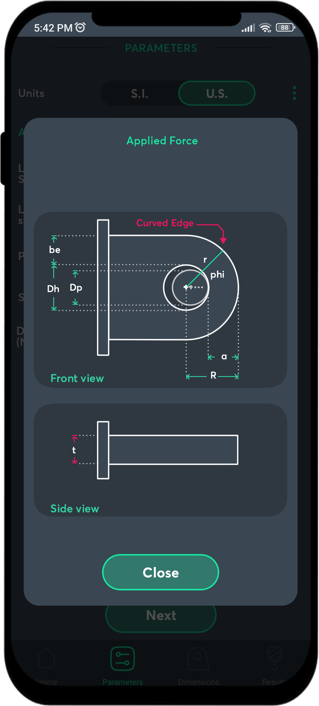
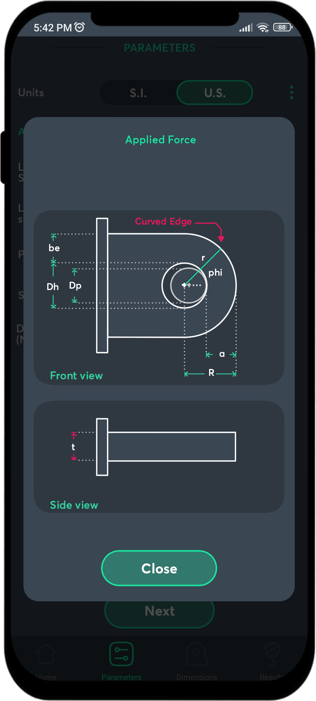

Waly
Lug Lifting strength Calculator
The application is specifically designed to calculate strength and failure modes for the structural design of lifting lugs connected directly to loads. Help students and professionals apply the ASME BTH-1 standard guidelines for lifting loads in industrial or construction environments.
 

Frequently Asked Questions
How accurate are the calculations?
Our calculations follow ASME BTH-1 standard guidelines precisely,
ensuring high accuracy for industrial applications.
Is the app suitable for students?
Yes, the app is designed to be educational and practical for both
students and professionals.
Contact Us
Privacy Policy
This Privacy Policy describes how the Waly app handles data. We are committed to protecting the privacy of our users and being transparent about how data is handled in the app.
1. Data Collected
The Waly app does not collect any personal information, location
data, or sensitive data. The only data entered by the user are
technical parameters related to the analysis of lifting lugs
according to the ASME BTH method, which are only necessary to
perform the failure mode calculations.
2. Purpose of the Data
The data entered into the app is used exclusively for:
- Performing calculations related to lifting failure modes.
- Display accurate results to the user based on the parameters provided.
No data is used for any other purpose.
- Performing calculations related to lifting failure modes.
- Display accurate results to the user based on the parameters provided.
No data is used for any other purpose.
3. Data Sharing
We do not share data entered into the app with any third parties.
All information is processed and stored locally on the user's
device.
4. Data Storage
- Data entered is stored locally on the user's device using
SQLite.
- We do not use cloud storage services or sync data with external servers.
- We do not use cloud storage services or sync data with external servers.
5. Data Access and Deletion
Users have full control over the data entered into the app. Once
calculations are done, stored data can be deleted directly from
the app interface.
6. Use of Cookies or Similar Technologies
The Waly app does not use cookies or similar technologies to track
user activity.
7. Data Security
Since the data handled by the app is purely technical and does not
contain personal or sensitive information, no advanced security
measures have been implemented. However, local storage of the data
ensures that it is not accessible by third parties without direct
access to the device.
8. Contact
If you have any questions about this Privacy Policy or the
handling of data in the app, you can contact us at: **Email:**
ingenieria@imad.com.pe
9. Changes to the Privacy Policy
We reserve the right to update this Privacy Policy in the future.
We will notify users of any material changes through the app or
other appropriate means.
Terms of Use
1. Introduction
The Waly application has been developed to perform calculations
related to the structural, mechanical and safety design of lifting
lugs according to the ASME BTH-1 standard. It is a support tool
for students and professionals in areas related to structural,
mechanical and industrial engineering. By using this application,
you agree to these Terms of Use. If you do not agree to them,
please do not use this application.
2. Purpose of the Application
The application is specifically designed to:
- Calculate the strength and failure modes for the structural design of lifting lugs directly connected to loads.
- Help students and professionals apply the guidelines of the ASME BTH-1 standard for lifting loads in industrial or construction environments.
- Calculate the strength and failure modes for the structural design of lifting lugs directly connected to loads.
- Help students and professionals apply the guidelines of the ASME BTH-1 standard for lifting loads in industrial or construction environments.
3. Eligibility for Use
There are no age restrictions for the use of this application.
However, its use is intended exclusively for student or
professional purposes related to structural or mechanical
engineering. It is not suitable for other unrelated purposes.
4. User Responsibility
- Users are responsible for entering accurate and correct
information into the application.
- The results generated are entirely dependent on the data provided by the user, and it is the user's responsibility to interpret and apply them appropriately to their context.
- It is recommended to verify the results obtained with a specialist before making critical decisions.
- The results generated are entirely dependent on the data provided by the user, and it is the user's responsibility to interpret and apply them appropriately to their context.
- It is recommended to verify the results obtained with a specialist before making critical decisions.
5. Limitation of Liability
- Waly is offered as a support tool and does not guarantee
completely accurate or suitable results for all circumstances.
- We are not liable for any direct, indirect or consequential damages arising from improper use of the results generated by the application.
- **Disclaimer:** The use of the results obtained through the application is at the user's own risk. The developers are not responsible for errors, failures or consequences arising from the incorrect use of the information.
- We are not liable for any direct, indirect or consequential damages arising from improper use of the results generated by the application.
- **Disclaimer:** The use of the results obtained through the application is at the user's own risk. The developers are not responsible for errors, failures or consequences arising from the incorrect use of the information.
6. Modifications to the Terms of Use**
We reserve the right to modify these Terms of Use in the future.
Any changes will be communicated through application updates. It
is recommended to review the Terms regularly to be informed of
possible modifications.
7. Payments
The purchase of the application is one-time and does not require
additional payments. No subscriptions, microtransactions or
additional costs are offered within the application.
8. Prohibitions on Use
It is prohibited to use the application for the following
purposes:
- Reverse engineering, decompilation or modification of the application's source code.
- Using the results for illegal, dangerous or non-compliant activities of the ASME BTH-1 standard.
- Redistributing the application or its results without the explicit consent of the developer.
- Reverse engineering, decompilation or modification of the application's source code.
- Using the results for illegal, dangerous or non-compliant activities of the ASME BTH-1 standard.
- Redistributing the application or its results without the explicit consent of the developer.
9. Intellectual Property
- The design, code and content of the application use the ASME
BTH-1 standard as a reference, which is not our property.
- The rights to the source code, interface and functionalities are the exclusive property of the developer.
- The rights to the source code, interface and functionalities are the exclusive property of the developer.
10. Legal Jurisdiction
These Terms of Use are governed by the laws of the Republic of
Peru. Any dispute related to the application will be resolved
under the jurisdiction of the Peruvian courts.
11. Contact
For questions or technical support, please contact the developer
at: **Email:** @.pe